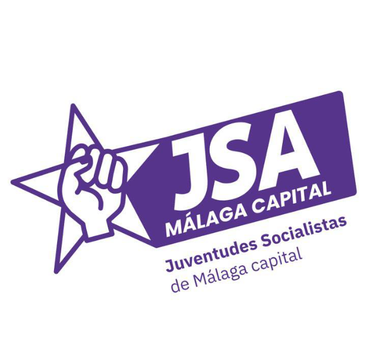
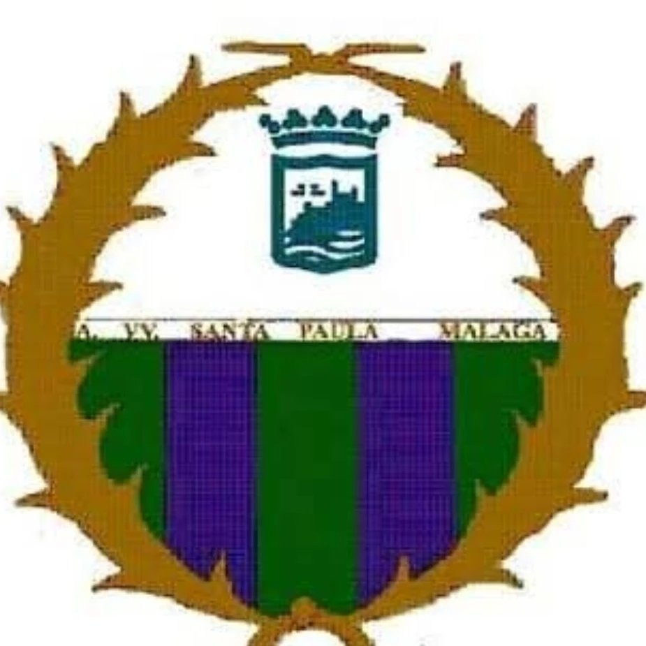
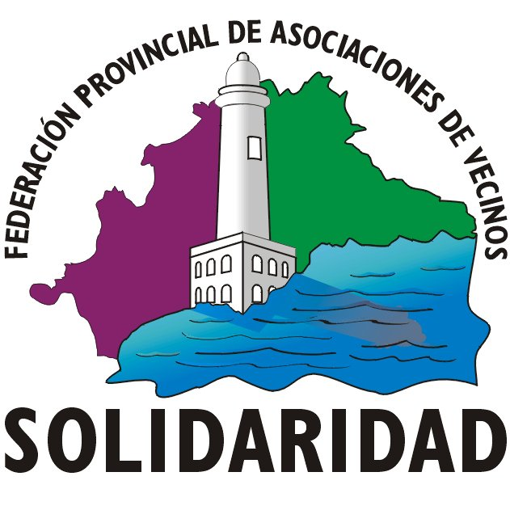
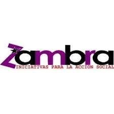
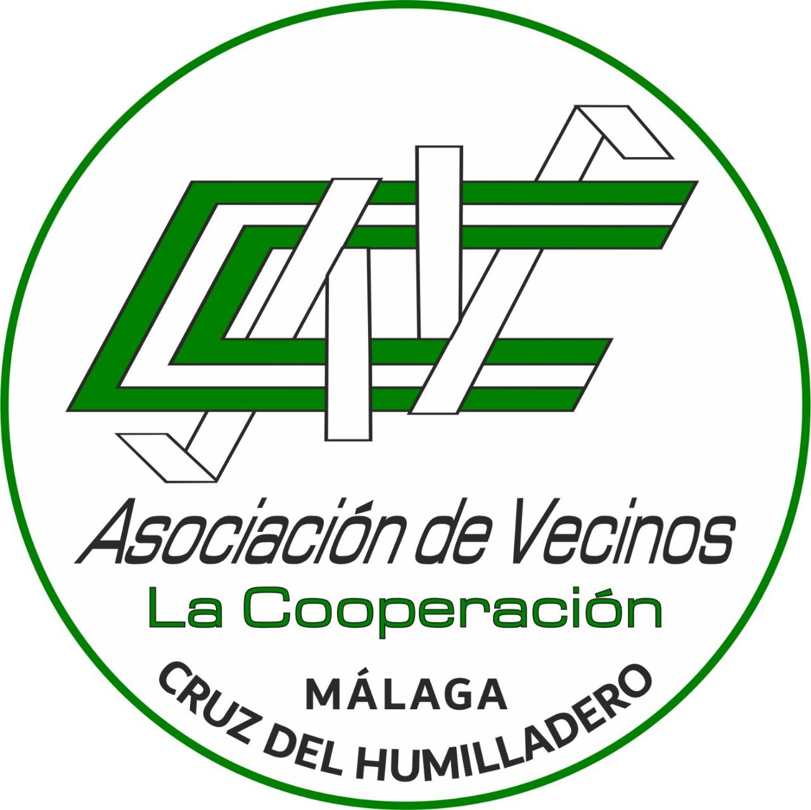
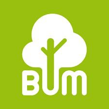
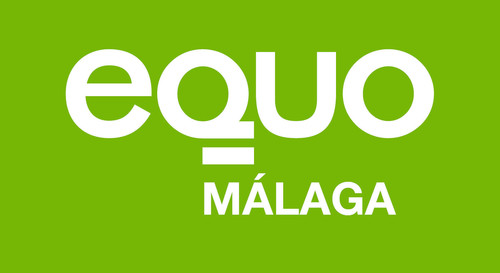
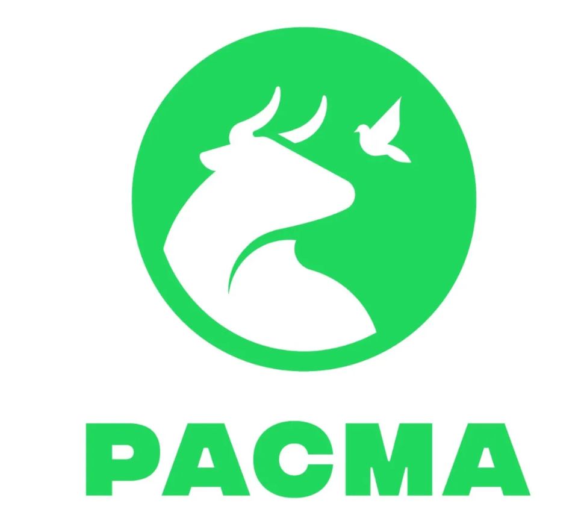

El movimiento en redes sociales:
El movimiento se hace escuchar, y durante toda su existencia ha tenido su presencia en la prensa.
Nuestros barrios siempre han sido ejemplo de comunidad y colectividad. La organización histórica de vecinos y vecinas en asociaciones y otros colectivos han sido claves para la consecución y defensa de los derechos sociales y culturales, imprescindibles para el buen desarrollo de nuestros barrios.
El Movimiento Vecinal por el Parque del Oeste nace en defensa de este espacio público y surge espontáneamente a causa de la privatización y cierre de más del 50% de este Parque durante cinco meses por parte del Ayuntamiento de Málaga y a beneficio de la empresa privada Ximénez Group y Lantern Group.
Desde nuestro colectivo/asociación apoyamos la defensa del Parque del Oeste de Málaga y nos oponemos al cierre para la explotación de un negocio privado, prohibiendo el uso y disfrute de la parte más socializadora y utilizada del parque.
Exigimos que esto no se vuelva a repetir.
Asociaciones, comunidades y grupos afines a la causa:
Asociación de vecinos La Luz
Asociación de vecinos Puerta Blanca
Asociación de vecinos Sixto
|  |
Juventudes Socialistas de Málaga Capital |
|  |
Asociación de vecinos Santa Paula |
|  |
Federación provincial de asociaciones de vecinos Solidaridad |
|  |
Iniciativas para la acción social Zambra |
|  |
Asociación de vecinos La Cooperación (Cruz del Humilladero) |
|  |
Plataforma ciudadana Bosque Urbano Málaga |
|  |
EQUO Málaga |
|  |
PACMA Málaga |
¿Qué es el Parque del Oeste?
Un espacio verde, público y para todas las malagueñas. Un vergel que se encuentra en uno de los distritos más poblados de Málaga. Uno de nuestros mayores tesoros:
Las dimensiones reales que ocupa el Festival en el Parque del Oeste:
Somos un movimiento pacífico, vecinas unidas creando un espacio seguro y libre de violencias de cualquier tipo.